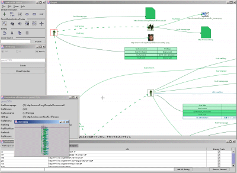
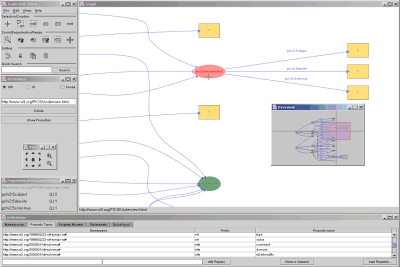
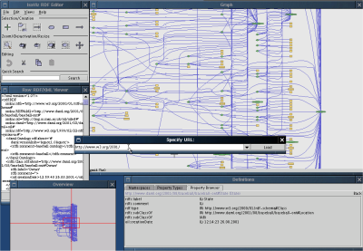

IsaViz: A Visual Authoring Tool for RDFCurrent version: 2.1 (October 2004) IntroductionIsaViz is a visual environment for browsing and authoring RDF models represented as graphs. It features:
Since version 2.0, IsaViz can render RDF graphs using GSS (Graph Stylesheets), a stylesheet language derived from CSS and SVG for styling RDF models represented as node-link diagrams. |
 IsaViz 2 with support for GSS (click to enlarge) |
IsaViz 2.1 released (2004-10-20)
This new relase is based on Jena 2.1 and supports the revised W3C RDF/XML Syntax Specification issued by the RDF Core Working Group. This version should also be easier to use in a Mac OS X environment. See changes for a complete list of new features and improvements.
OWL Schema for GSS (2003-08-12)
Ryan Lee has written an OWL schema for GSS, which can be found at the GSS namespace URI. An informal Notation 3 version is also available.
IsaViz 2.0 released (2003-08-08)
This new relase supports the Last Call Working Draft specifications issued by the RDF Core Working Group including datatypes. It also supports GSS (Graph Stylesheets) an RDF-based style language for rendering RDF models. Other new features include enhanced navigation, better handling of namespace prefix bindings, and an import/export plug-in interface. See changes for a complete list of new features and improvements.
Problem with GraphViz 1.10.0 (2003-07-31)
The first release of GraphViz version 1.10.0 contains a bug that causes dot to produce incomplete SVG files, thus preventing IsaViz from importing RDF files. This problem has been corrected in subsequent releases, which can be downloaded from the graphviz.org site. Note: this problem only affects users who have installed GraphViz version 1.10.0.
Important Note (2003-03-07)
Several people have encountered difficulties importing local RDF files in IsaViz 1.2 (and might encounter the same problem if upgrading from 1.0 or 1.1 to 2.0 or 2.1): the model is not loaded, and the following error message is generated:
RDFErrorHandler.error: com.hp.hpl.jena.rdf.arp.MalformedURIException: No scheme found in URI.
The source of this error is a bad Defaut Base URI in your preferences (e.g. "online"). To correct this, select Edit/Preferences, and set the Default Base URI value to blank or to the well-formed URI of your choice.
|  |  |
More screenshots are available. | |
Latest stable version: 2.1
| Binary distribution (zip file, 9.46 Mb) | isaviz-bin-2_1.zip |
| Binary distribution (tarball, 9.42 Mb) | isaviz-bin-2_1.tar.gz |
| Source distribution (tarball, 9.98 Mb) | isaviz-src-2_1.tar.gz |
| Older versions | |
Development version: the latest source code is available through the W3C’s public CVS repository.
You will also need to download graphviz/dot for your specific platform (version 1.8.9 or later is mandatory if you are installing IsaViz 2). Note: some instances of version 1.10.0 had a bug that produced incomplete SVG files, but it has been corrected in subsequent releases (newer versions can be obtained on the graphviz.org site).
Finally, as IsaViz is implemented in Java, it requires a JVM (Java Virtual Machine) 1.3.0 or later (1.4.0 or later strongly recommended - see Known problems) since the GUI makes extensive use of Java2D which featured poor performances in JVM 1.2.x. The latest JVM from Sun can be downloaded at http://java.sun.com/j2se/1.4/
The Sesame plug-in makes it possible to read/write RDF data directly from/to a Sesame server. It can be downloaded freely from the Sesame Sourceforge Project page.
Installation instructions contain information on how to install and configure IsaViz, including requirements for additional software versions. You should read these as they contain important instructions regarding GraphViz/dot which is not included in the distribution.
A User Manual describing all features of IsaViz is also available, as well as a User Manual for Graph Stylesheets (GSS).
If you want to make comments, bug reports or simply ask a question, use the following mailing list: www-isaviz@w3.org. To subscribe to the list, send an e-mail to www-isaviz-request@w3.org with subscribe in the subject header. See http://www.w3.org/Mail/Request for more details. An archive of messages sent to the list is available.
IsaViz is developed by Emmanuel Pietriga.
The first version was developed in collaboration with Xerox Research Centre Europe which also contributed XVTM, the ancestor of ZVTM (Zoomable Visual Transformation Machine) upon which IsaViz is built. IsaViz 2.0/GSS was developed during my postdoc funded by INRIA and MIT. As of October 2004, further development is handled by INRIA Futurs project In Situ. IsaViz also includes software developed by:
and makes use of the GraphViz library developed by AT&T Research.
The Sesame plug-in is developed by Aidministrator.
Emmanuel Pietriga |
{kind=link}
{kind=link}
{kind=link}